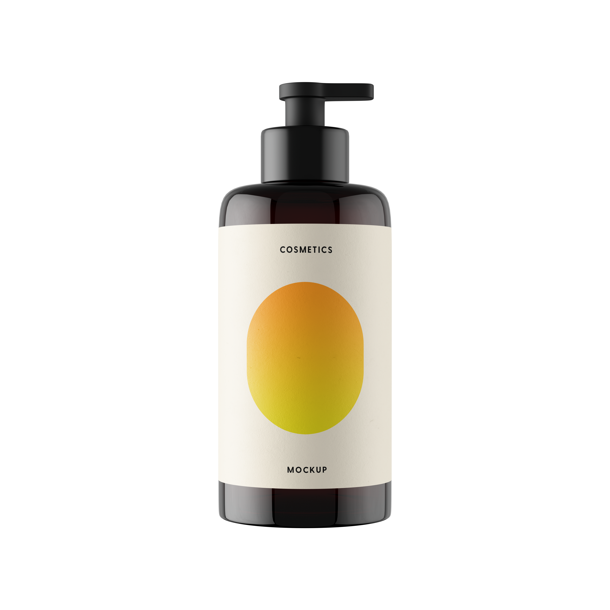
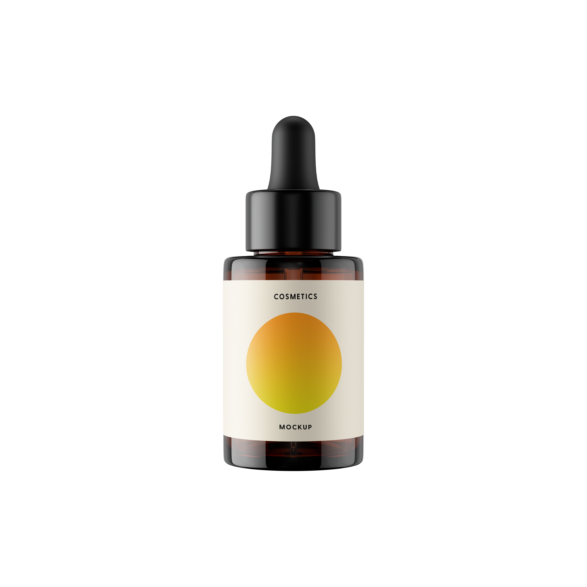

Introducing
The Oyin Collection
Rooted in ritual, the Oyin Collection is a four-step haircare experience designed to nourish, restore, and treat Afro-textured hair. From pre-wash preparation to cleansing, conditioning, and lasting care, each step brings intention to your wash-day routine.
-
1
Prelude

Pre-Shampoo Oil Treatment
Prepares and cleanses the hair and scalp to ensure products penetrate effectively.
Shop -
2
Wash

Shampoo & Conditioner
Gently cleanses the scalp and hair while restoring moisture.
Shop -
3
Nourish

Intensive Hair Mask
Deeply conditions textured hair to improve softness, manageability, and moisture.
Shop -
4
Replenish

Restorative Scalp Treatment
Supports a nourished scalp with a restorative finishing treatment.
Shop

A curated style guide exploring the versatility and artistry of textured hair.
Explore the Lookbook